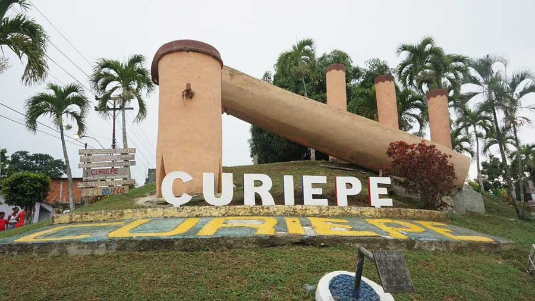
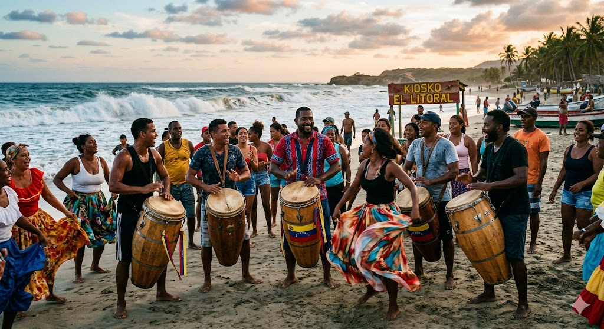
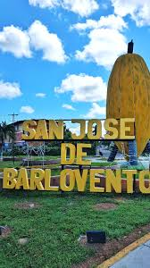
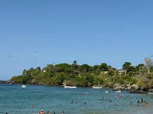
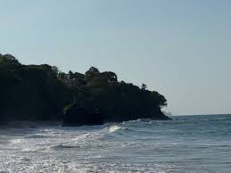
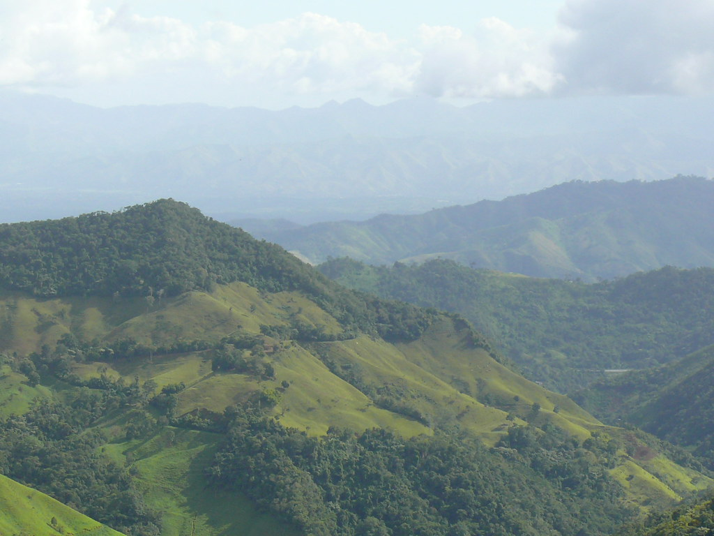
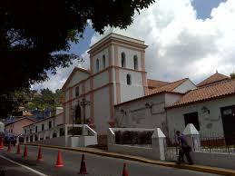
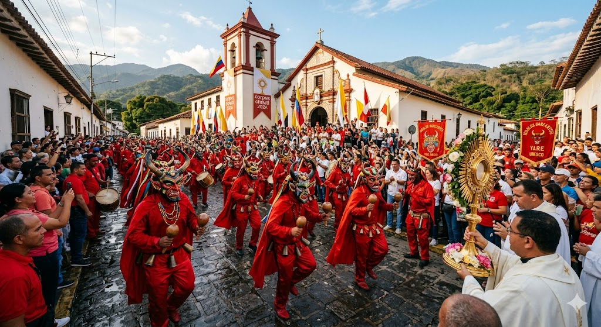
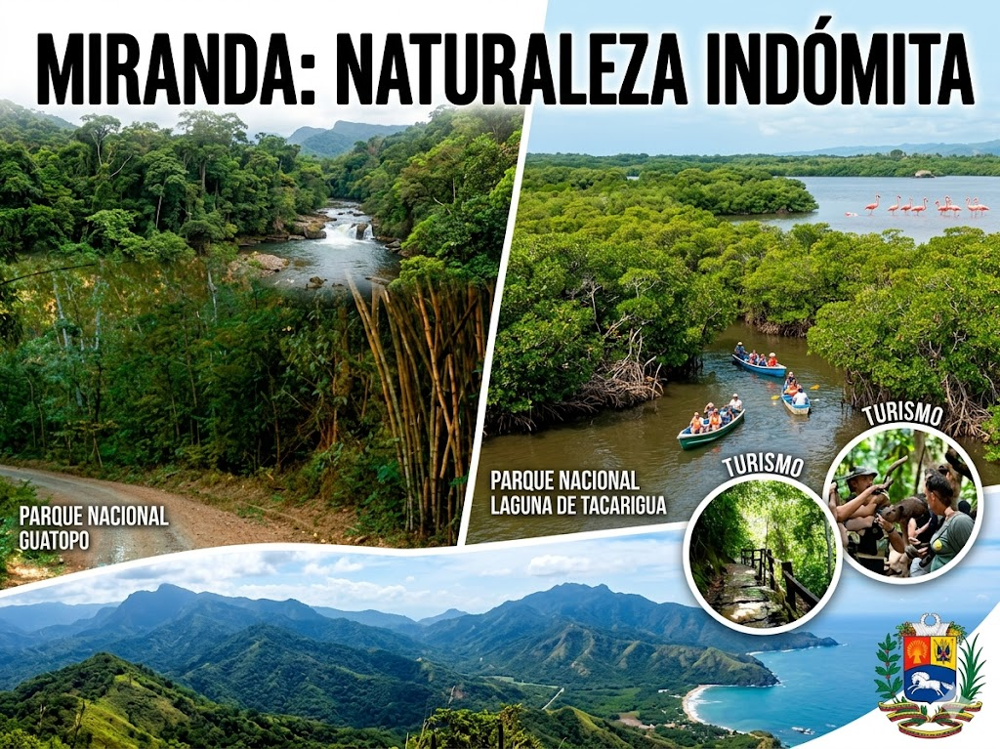
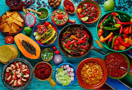

El Estado Miranda es, quizás, la región más ecléctica de toda Venezuela. Su geografía es un rompecabezas donde encajan perfectamente la selva húmeda, las costas de arena ardiente, los valles industriales y las montañas de clima templado. Al ser el estado que rodea gran parte de la capital, Caracas, ha desarrollado una infraestructura turística que oscila entre el lujo de los canales navegables y la sencillez rústica de los pueblos de pescadores. A continuación, exploramos a fondo cada rincón de este estado:
Barlovento no es solo una ubicación geográfica, es una subregión cultural con una identidad propia muy marcada por la herencia africana. El turismo aquí se vive a través de los sentidos.





Es el epicentro del turismo costero mirandino. Posee una amplia gama de hoteles y posadas. Desde su embarcadero principal y los muelles de Carenero, salen las lanchas hacia parajes idílicos como Cayo Buche, una pequeña isla rodeada de manglares con aguas poco profundas, ideal para familias.
Para quienes buscan algo más salvaje, Puerto Francés ofrece una costa amplia de arena gruesa y aguas color turquesa. Si se busca aislamiento total, las expediciones hacia Caruao o Chuspa (en el límite con La Guaira) revelan playas casi vírgenes donde el río se une con el mar.
Este es uno de los desarrollos urbanísticos-turísticos más ambiciosos del siglo pasado. Se trata de un sistema de canales navegables que permite a muchas casas y posadas tener su propio muelle, creando un ambiente similar a un complejo náutico de descanso.

>Al subir hacia el suroeste, el clima cambia drásticamente. El calor de la costa se transforma en una neblina perpetua y temperaturas que pueden bajar de los 15°C durante las noches.
Son zonas que han crecido como ciudades dormitorio pero que conservan un alma rural. El turismo aquí es de proximidad y gastronomía. Es común ver a turistas visitando los viveros de flores de San Diego o disfrutando de parrilladas y comida internacional en los centros comerciales y restaurantes de San Antonio.
Aunque mucha gente cree que la cultura alemana en Venezuela termina en la Colonia Tovar, El Jarillo es un pueblo fundado por inmigrantes alemanes que mantiene una arquitectura típica, cultivos de durazno y fresas, y es el destino predilecto para el parapente, gracias a sus corrientes de aire y sus vistas espectaculares hacia la represa de Agua Fría.

Aunque Caracas es un distrito aparte, municipios mirandinos como Baruta, Chacao y Sucre forman parte de la cotidianidad de la capital. Sin embargo, El Hatillo destaca como el pueblo turístico por excelencia.
El centro de El Hatillo conserva sus fachadas coloniales y calles empedradas. Se ha convertido en un centro de diseño y artesanía donde se pueden conseguir piezas de todo el país.
Es uno de los puntos culinarios más fuertes del estado. Desde restaurantes de alta cocina hasta puestos callejeros de churros y chocolate caliente, la oferta es inagotable.

Miranda es el estado con más manifestaciones reconocidas por la UNESCO en Venezuela. Esto genera un flujo de "turismo cultural" muy específico en fechas determinadas.
En San Francisco de Yare, cada Corpus Christi, la ciudad se tiñe de rojo. Cientos de promeseros con máscaras grotescas y coloridas bailan ante la iglesia para simbolizar la rendición del mal ante el Santísimo Sacramento. Es un espectáculo visual único en el mundo.
En Guarenas y Guatire, cada 29 de junio, los hombres se pintan la cara de negro y usan levitas para recordar la historia de María Ignacia. Es una fiesta llena de teatro, música y una energía comunitaria contagiosa.
"Si San Juan lo tiene, San Juan te lo da". En todo Barlovento (Curiepe, Brión, Acevedo), los tambores no dejan de sonar desde el 23 hasta el 25 de junio. Es una experiencia inmersiva de danza y espiritualidad afrodescendiente.

Para el aventurero que huye del concreto, Miranda ofrece pulmones vegetales masivos.
Situado entre los estados Miranda y Guárico, es una de las selvas más densas del país. Es un lugar clave para la observación de aves y el estudio de fauna silvestre. Sus balnearios de agua cristalina y fría son un tesoro escondido para quienes no temen adentrarse en la selva.
Ubicado en el área metropolitana, este parque ofrece un sistema de cuevas y paredes de roca que lo convierten en la escuela de escalada más importante de la región central.
Un parque nacional costero que consiste en una laguna costera separada del mar por una barrera de arena. El paseo en bote por los manglares permite ver flamencos, pelícanos y una diversidad de fauna marina impresionante.

No se puede hablar de Miranda sin mencionar el Cacao de Carenero Superior. Este grano es buscado por chocolateros de Europa y Japón. El turismo de haciendas (como la Hacienda La Concepción) permite a los visitantes conocer el proceso desde la recolección de la mazorca hasta la elaboración de la tableta de chocolate.
En cuanto a la comida típica de calle, el estado se divide en dos:
Dominan el pescado frito, el hervido de pescado con coco y la "cafunga" (un postre de plátano y coco).
Los dulces de almíbar, las fresas con crema y los platos de caza o carnes rojas son los protagonistas.
El turismo en el Estado Miranda es un reflejo de la resiliencia y la alegría de su gente. A pesar de los retos económicos, las posadas siguen abriendo sus puertas, los pescadores siguen ofreciendo sus paseos y las cofradías siguen preparando sus máscaras. Visitar Miranda es entender que Venezuela no es solo un destino, sino un conjunto de experiencias que cambian con tan solo conducir media hora en cualquier dirección.